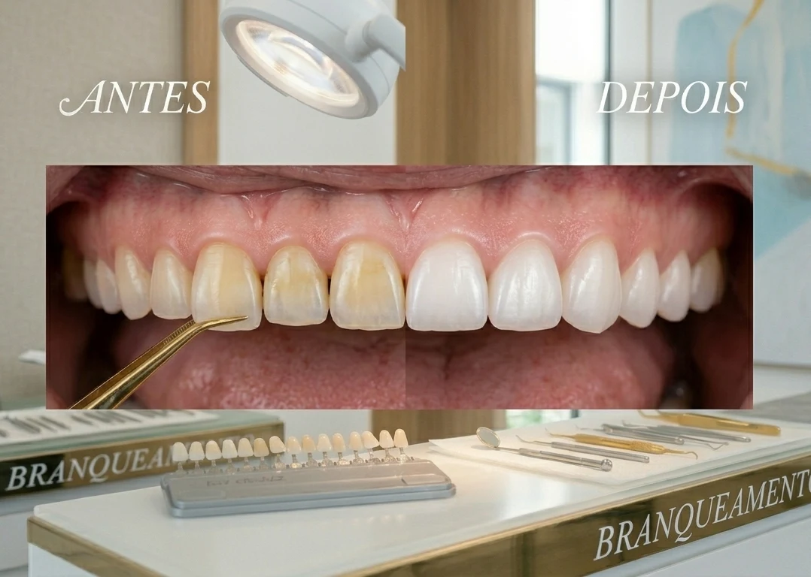

A Estética Dentária foca-se na harmonia e beleza do sorriso, utilizando os tratamentos mais avançados para corrigir imperfeições na cor, forma e alinhamento dos dentes. Na EsteticaMente, criamos sorrisos radiantes e naturais, devolvendo-lhe a autoconfiança de forma rápida e segura.
Principais Transformações:
Branqueamento Dentário Profissional (In-Office): Dentes visivelmente mais brancos e luminosos em apenas uma sessão na clínica.
Facetas de Cerâmica: Capas ultrafinas que corrigem falhas, manchas, dentes tortos ou desgastados de forma permanente.
Facetas de Compósito: Uma solução mais rápida e económica para corrigir pequenas imperfeições estéticas.
Gengivoplastia: Correção do "sorriso gengival" ou retrações para um contorno gengival harmónico.
O nosso foco: Unir a arte à tecnologia para criar o seu sorriso ideal, com resultados naturais e duradouros.
